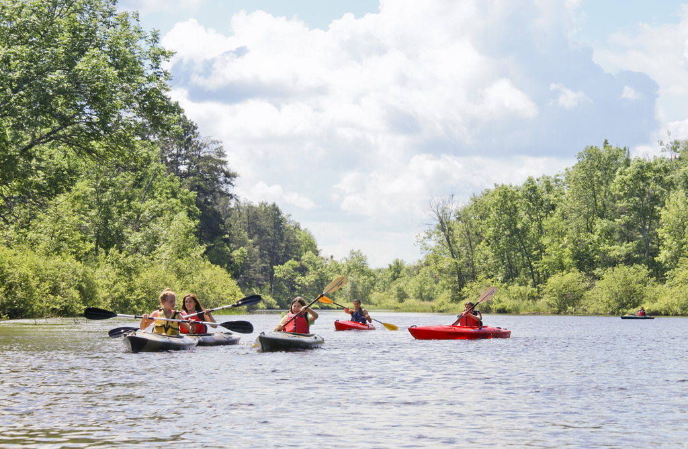

The directory/Lac Courte Oreilles Band of Lake Superior Chippewa

Lac Courte Oreilles Boys and Girls Club paddlers, June 2014Jean Van Tatenhove / National Park Service; Lac Courte Oreilles Boys and Girls Club paddlers, June 2014. Public domain — U.S. federal work. Source record and photograph license linked.
Named Tribal government · Added to the original list
Lac Courte Oreilles Band of Lake Superior Chippewa
Lac Courte Oreilles Band of Lake Superior Chippewa is a distinct Ojibwe government whose official history names the community as Odaawaa-Zaaga'iganiing. The account places land, treaties and the effects of logging at the center of its nineteenth-century history. It describes reservation boundaries surveyed with Tribal chiefs in 1872 and the depletion of timber during the following decades. The account also emphasizes the persistence of hunting, fishing and seasonal food gathering under sustained outside pressure. A complementary introduction comes from Lac Courte Oreilles Ojibwe University, which traces its origins to a task force of parents and educators and a charter from the Tribal Governing Board in 1982. Its account follows the institution's later educational and campus development. Together, the readings connect a community history of land pressure with education built under Tribal authority. They do not establish current legal rights, admissions, accreditation or educational outcomes. The NPS photograph shows Lac Courte Oreilles Boys and Girls Club paddlers during a particular 2014 outing; it does not identify the citizenship of every participant.
See each region’s evidence for historical or present-day scope.
Homeland / region
Wisconsin, United States — current government listing
Research depth
Source guide
Source collection
2 annotated resources · 2 Indigenous-led
Inspected sources
2 substantive works · selected content reviewed
Initial adequacy
Still unfinished
Source review
October 27, 2026
Names & relationshipsThe state roster identifies this named Tribal Nation separately. It does not establish the full history or relationships of every broader reading label.
A source guide for a deeper dive.This entry provides a brief orientation and an organized reading path. A comprehensive deep dive has not yet been completed. Follow the annotated sources and distinguish primary community accounts from outside reference material.
Still unfinished
A bounded collection of actual selected source bodies supports a useful starting guide for this named government. It remains incomplete and does not imply community endorsement.
Assessment recorded October 27, 2026. This is separate from research completion and community review.
Read community-focused historical scholarship and underlying survey, treaty and timber records before expanding the chronology.
Add community voices on language and education and evidence of access and outcomes.
Do not infer present harvesting rules, public access or university admissions from historical descriptions.
Backdrop photographs & credits
These photographs have individual, documented connections to this entry. Their captions and source records define the people, place, object, and period shown; no one photograph represents every community within a broader label.
Lac Courte Oreilles Boys and Girls Club paddlers, June 2014 Jean Van Tatenhove / National Park Service; Lac Courte Oreilles Boys and Girls Club paddlers, June 2014. Public domain — U.S. federal work. Source record and photograph license linked.
The NPS record specifically identifies the Lac Courte Oreilles Boys and Girls Club and Namekagon outing. This is community-institution activity away from the reservation, not a boundary claim or proof of each participant's Tribal citizenship. Participants are not named or assigned personal identities. The retrieved original is 1024×669, the complete frame available through this Commons record; no larger camera original was retrieved. Exact complete available JPEG copied unchanged. CSS crops/overlays affect display only.
Image, association, and reuse record reviewed 2026-10-27.
Full photographs are displayed proportionally above. A translucent background copy may be cropped by the viewport; it does not replace the complete image or its record.
The visual treatment does not change the research status, evidence, or remaining gaps recorded in this profile.
Start reading here
Exact named government; broader Ojibwe or Potawatomi histories and related governments remain distinct.
The Band interprets treaty-era pressure, reservation surveying and timber extraction from a community perspective. Broad origin, language-family and naming assertions are excluded; historical figures need independent corroboration.
The university recounts its community planning, Tribal charter and institutional development. This is its own history; current accreditation, course availability, access and educational outcomes were not independently evaluated.
These are selected starting points. The full annotated collection, source perspectives, inspection limits and remaining research questions follow below. A starting guide is not an exhaustive history or community endorsement.
01
Land pressure in the Band narrative
The official account describes chiefs accompanying the 1872 reservation survey and subsequent logging that depleted the timber base. It also records seasonal livelihoods continuing under pressure, making land and community continuity a useful starting theme.
The university traces its beginning to parents and educators organizing in 1982 and a charter issued that August by the Tribal Governing Board. Its institutional chronology offers a second path into local community building.
Read community-focused historical scholarship and underlying survey, treaty and timber records before expanding the chronology.
Add community voices on language and education and evidence of access and outcomes.
Do not infer present harvesting rules, public access or university admissions from historical descriptions.
Selected actual-content works support a bounded starting guide. Earlier source objects retain their original review dates and limits. Reused URLs, images and identity-only checks are not new global historical works. Full history and community review remain open.
Follow the reading path
Sources & further reading
Open any title to read the original source. Annotations explain what each link can help you explore.
No Indigenous-led source is identified in this entry yet. This is a gap in this collection, and does not imply an absence of community knowledge or organization.
Indigenous-ledLac Courte Oreilles Band of Lake Superior ChippewaSource 1
The Band interprets treaty-era pressure, reservation surveying and timber extraction from a community perspective. Broad origin, language-family and naming assertions are excluded; historical figures need independent corroboration.
Inspection: Content reviewed for the stated scope
Scope: Actual History body from mission through closing twentieth-century transition read in rendered search content; selected reservation-survey, timber and seasonal-livelihood paragraphs. Archaeological/burial detail, generalized ethnology and numerical timber-price claims excluded.
The university recounts its community planning, Tribal charter and institutional development. This is its own history; current accreditation, course availability, access and educational outcomes were not independently evaluated.
Inspection: Content reviewed for the stated scope
Scope: Actual History body lines 179–217 read, especially 1982 planning and Tribal charter at 183–190. Later institutional changes read as historical self-description, not current accreditation verification.
Related entries may represent alternate names, constituent communities, wider groupings, or historical connections. Read the naming notes before treating entries as equivalent.
Robey’s Atlas of Indigenous North America · Compiled October 19, 2026 · Lac Courte Oreilles Band of Lake Superior Chippewa